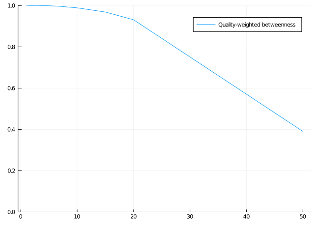
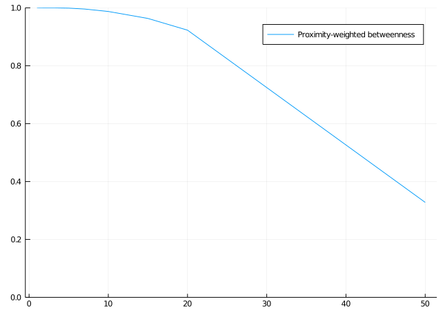

using ConScape
using SparseArrays
using Statistics
using PlotsPerformance
Here you will learn
How to use a subsample of target pixels or landmarks to increase computational performance with minimal loss in accuracy.
In this notebook we demonstrate the use of landmarks with the coarse_graining function to reduce the computational demands in ConScape, see main text of details and discussion.
Data import and Grid creation
See notebook getting started for a ‘basic workflow’ to learn about data import and the creation of a ConScape Grid:
datadir = joinpath(ENV["HOME"], "Downloads", "input_maps")
outdir = joinpath(ENV["TMPDIR"], "figures")
if !isdir(outdir)
mkdir(outdir)
end"C:/Users/bram.van.moorter/Documents/ConScape_website/site/notebooks/data/"mov_prob, meta_p = ConScape.readasc(joinpath(datadir, "mov_prob_1000.asc"))
hab_qual, meta_q = ConScape.readasc(joinpath(datadir, "hab_qual_1000.asc"));non_matches = findall(xor.(isnan.(mov_prob), isnan.(hab_qual)))
mov_prob[non_matches] .= NaN
hab_qual[non_matches] .= NaN;adjacency_matrix = ConScape.graph_matrix_from_raster(mov_prob)
g = ConScape.Grid(size(mov_prob)...,
affinities=adjacency_matrix,
source_qualities=hab_qual,
target_qualities=ConScape.sparse(hab_qual),
costs=ConScape.mapnz(x -> -log(x), adjacency_matrix));┌ Info: cost graph contains 4927 strongly connected subgraphs
└ @ ConScape C:\Users\bram.van.moorter\.julia\packages\ConScape\spkWs\src\grid.jl:215
┌ Info: removing 4926 nodes from affinity and cost graphs
└ @ ConScape C:\Users\bram.van.moorter\.julia\packages\ConScape\spkWs\src\grid.jl:225Coarse graining
We remind the reader that the target qualities can be represented by a sparse matrix:
typeof(g.target_qualities)SparseMatrixCSC{Float64, Int64}Thus, habitat of quality zero is not explicitly stored in the matrix, which reduces the memory footprint in case of matrices with many zeros. We can now further increase the sparseness of this matrix to reduce the computational requirements in terms of processing time, but especially also in terms of memory requirements. ConScape currently has a function to facilitate this process, the function coarse_graining will merge a number of pixel (20 in our example) along both the x and y axis. It does so by summing the target qualities of all pixels and assigning this value to the center pixel, while setting all other cells to zero. The idea is thus to connect pixels from a higher resolution source map to a lower resolution target map. The benefit of this approach compared to, for instance, using lower resolution maps in general is that movement paths are still represented with a high resolution. The main assumption underlying the use of these low-resolution target qualities is that all high-resolution pixels within a coarse pixel are equally well connected to the source pixel as the high-resolution pixel at the center of the coarse pixel. This assumption will be more difficult to meet with increasing number of pixels aggregated and with increasing heterogeneity in the landscape.
coarse_target_qualities = ConScape.coarse_graining(g, 20)
g_coarse = ConScape.Grid(size(mov_prob)...,
affinities=adjacency_matrix,
source_qualities=hab_qual,
target_qualities=coarse_target_qualities,
costs=ConScape.mapnz(x -> -log(x), adjacency_matrix));┌ Info: cost graph contains 4927 strongly connected subgraphs
└ @ ConScape C:\Users\bram.van.moorter\.julia\packages\ConScape\spkWs\src\grid.jl:215
┌ Info: removing 4926 nodes from affinity and cost graphs
└ @ ConScape C:\Users\bram.van.moorter\.julia\packages\ConScape\spkWs\src\grid.jl:225θ = 1.0
@time h = ConScape.GridRSP(g, θ=θ); 11.453773 seconds (10.29 M allocations: 2.448 GiB, 4.15% gc time, 44.66% compilation time)@time h_coarse = ConScape.GridRSP(g_coarse, θ=θ); 0.038946 seconds (198 allocations: 18.312 MiB)The reduction in computation is substantial. The processing time goes from 16 to 0.05 seconds and the memory requirements from 2.5 Gb to 18 Mb by aggregating \(20 \times 20\) pixels into a single pixel. Obviously, the reduction in computation will be less with lower numbers of pixels aggregated. However, even merging as few as 2 or 3 pixels will result in substantial reductions in computation (respectively 2.6 and 1.2 seconds of processing time, and 503 Mb and 232 Mb of memory).
We will now investigate how the estimation of the amount of connected habitat and the movement flow are affected by this coarse graining of the target pixels.
Amount of connected habitat
We compute the amount of connected habitat or functionality for each pixel using the expected cost distance and an exponential decay for both the high-resolution and low-resolution target qualities:
func = ConScape.connected_habitat(h,
distance_transformation=x -> exp(-x/75));
func_coarse = ConScape.connected_habitat(h_coarse,
distance_transformation=x -> exp(-x/75));display(ConScape.heatmap(func, yflip=true, title="Complete", color=cgrad(:viridis)))
display(ConScape.heatmap(func_coarse, yflip=true, title="Landmark-based", color=cgrad(:viridis)))Comparison of functional habitat without and with landmarks.
Compare the computation based on all pixels versus the one based on landmarks and we see they are highly similar.
Hence, the correlation between these values is:
cor(filter(x -> !isnan(x), func), filter(x -> !isnan(x), func_coarse))0.9995672056717685Clearly, the estimation of the ranking of source pixels based upon their functional connectivity to target pixels is relatively little affected by the aggregation of these target pixels.
When we look at the change in the amount of connected habitat in the landscape:
sqrt(sum(filter(x -> !isnan(x), func_coarse)))/
sqrt(sum(filter(x -> !isnan(x), func)))0.9318905358312394There is some under-estimation, however, note that we used a substantial level of coarse graining (i.e. \(20 \times 20\)). We now investigate how the accuracy changes for different levels of coarse graining.
We compute both the correlation between pixel-level and landscape-level amount of connnected habitat over a range of aggregation levels (from 1, no aggregation, to 50):
coarseness = [1, 2, 3, 5, 7, 10, 15, 20, 50]
est_func = zeros(length(coarseness))
cor_func = zeros(length(coarseness))
for i in 1:length(coarseness)
g_tmp = ConScape.Grid(size(mov_prob)...,
affinities=adjacency_matrix,
source_qualities=hab_qual,
target_qualities=ConScape.coarse_graining(g, coarseness[i]),
costs=ConScape.mapnz(x -> -log(x), adjacency_matrix))
@time h_tmp = ConScape.GridRSP(g_tmp, θ=θ);
func_coarse = ConScape.connected_habitat(h_tmp, distance_transformation=x -> exp(-x/75));
est_func[i] = sum(filter(x -> !isnan(x), func_coarse))
cor_func[i] = cor(filter(x -> !isnan(x), func), filter(x -> !isnan(x), func_coarse))
end┌ Info: cost graph contains 4927 strongly connected subgraphs
└ @ ConScape C:\Users\bram.van.moorter\.julia\packages\ConScape\spkWs\src\grid.jl:215 6.300860 seconds (10.74 k allocations: 1.865 GiB, 3.46% gc time, 0.05% compilation time)┌ Info: removing 4926 nodes from affinity and cost graphs
└ @ ConScape C:\Users\bram.van.moorter\.julia\packages\ConScape\spkWs\src\grid.jl:225┌ Info: cost graph contains 4927 strongly connected subgraphs
└ @ ConScape C:\Users\bram.van.moorter\.julia\packages\ConScape\spkWs\src\grid.jl:215 1.575205 seconds (2.83 k allocations: 489.299 MiB, 3.27% gc time)┌ Info: removing 4926 nodes from affinity and cost graphs
└ @ ConScape C:\Users\bram.van.moorter\.julia\packages\ConScape\spkWs\src\grid.jl:225┌ Info: cost graph contains 4927 strongly connected subgraphs
└ @ ConScape C:\Users\bram.van.moorter\.julia\packages\ConScape\spkWs\src\grid.jl:215 0.690620 seconds (1.37 k allocations: 225.532 MiB)┌ Info: removing 4926 nodes from affinity and cost graphs
└ @ ConScape C:\Users\bram.van.moorter\.julia\packages\ConScape\spkWs\src\grid.jl:225┌ Info: cost graph contains 4927 strongly connected subgraphs
└ @ ConScape C:\Users\bram.van.moorter\.julia\packages\ConScape\spkWs\src\grid.jl:215 0.264900 seconds (604 allocations: 89.050 MiB)┌ Info: removing 4926 nodes from affinity and cost graphs
└ @ ConScape C:\Users\bram.van.moorter\.julia\packages\ConScape\spkWs\src\grid.jl:225┌ Info: cost graph contains 4927 strongly connected subgraphs
└ @ ConScape C:\Users\bram.van.moorter\.julia\packages\ConScape\spkWs\src\grid.jl:215 0.168667 seconds (409 allocations: 52.960 MiB, 10.36% gc time)┌ Info: removing 4926 nodes from affinity and cost graphs
└ @ ConScape C:\Users\bram.van.moorter\.julia\packages\ConScape\spkWs\src\grid.jl:225┌ Info: cost graph contains 4927 strongly connected subgraphs
└ @ ConScape C:\Users\bram.van.moorter\.julia\packages\ConScape\spkWs\src\grid.jl:215 0.082171 seconds (286 allocations: 32.027 MiB)┌ Info: removing 4926 nodes from affinity and cost graphs
└ @ ConScape C:\Users\bram.van.moorter\.julia\packages\ConScape\spkWs\src\grid.jl:225 0.050841 seconds (229 allocations: 21.921 MiB)┌ Info: cost graph contains 4927 strongly connected subgraphs
└ @ ConScape C:\Users\bram.van.moorter\.julia\packages\ConScape\spkWs\src\grid.jl:215
┌ Info: removing 4926 nodes from affinity and cost graphs
└ @ ConScape C:\Users\bram.van.moorter\.julia\packages\ConScape\spkWs\src\grid.jl:225 0.039497 seconds (208 allocations: 18.312 MiB)┌ Info: cost graph contains 4927 strongly connected subgraphs
└ @ ConScape C:\Users\bram.van.moorter\.julia\packages\ConScape\spkWs\src\grid.jl:215
┌ Info: removing 4926 nodes from affinity and cost graphs
└ @ ConScape C:\Users\bram.van.moorter\.julia\packages\ConScape\spkWs\src\grid.jl:225
0.047757 seconds (199 allocations: 14.704 MiB, 34.40% gc time)┌ Info: cost graph contains 4927 strongly connected subgraphs
└ @ ConScape C:\Users\bram.van.moorter\.julia\packages\ConScape\spkWs\src\grid.jl:215
┌ Info: removing 4926 nodes from affinity and cost graphs
└ @ ConScape C:\Users\bram.van.moorter\.julia\packages\ConScape\spkWs\src\grid.jl:225plot(coarseness, cor_func, ylims=(0.0, 1.0), label=nothing)The ranking of source pixels based on their functional connectivity to high-quality target pixels, is hardly affected by aggregation. Aggregating less than \(10 \times 10\) pixels results in a virtual identical ranking, whereas even sever levels of aggregation (\(50 \times 50\)) still result in a correlation above \(0.98\).
However, as we saw above, the loss in accuracy is a bit more pronounced for the amount of connnected habitat:
plot(coarseness, sqrt.(est_func)/
sqrt.(sum(sum(filter(x -> !isnan(x), func)))),
ylims=(0.0, 1.0), label=nothing)We can see in our example that aggregating less than 10 pixels will result in less than 1% drop in estimated amount of connected habitat, but increasing the level of aggregation will result in an accelerating underestimation of the actual amount of connected habitat.
Movement flow
We compute the betweenness or movement flow for each pixel for both the high-resolution and low-resolution (\(20 \times 20\)) target qualities, first for the quality weighted version:
qbetw = ConScape.betweenness_qweighted(h);
qbetw_coarse = ConScape.betweenness_qweighted(h_coarse);cor(filter(x -> !isnan(x), qbetw), filter(x -> !isnan(x), qbetw_coarse))0.9310641946569057Although, there is still a high correlation, this drop in accuracy is actually perceivable in the maps:
display(ConScape.heatmap(qbetw, yflip=true, title="Complete"))
display(ConScape.heatmap(qbetw_coarse, yflip=true, title="Landmark-based"))Comparison of quality-weighted betweenness without and with landmarks.
We found similar results for the quality and proximity weighted version of the betweenness:
kbetw = ConScape.betweenness_kweighted(h,
distance_transformation=x -> exp(-x/75));
kbetw_coarse = ConScape.betweenness_kweighted(h_coarse,
distance_transformation=x -> exp(-x/75));cor(filter(x -> !isnan(x), kbetw), filter(x -> !isnan(x), kbetw_coarse))0.9227035681051887display(ConScape.heatmap(kbetw, yflip=true, title="Complete"))
display(ConScape.heatmap(kbetw_coarse, yflip=true, title="Landmark-based"))
Comparison of proximity-weighted betweenness without and with landmarks.
As commented above, a \(20 \times 20\) aggregation of pixels is quite a high level of compression. Let’s now see how the accuracy changes with changing levels of aggregation.
cor_qbetw = zeros(length(coarseness))
cor_kbetw = zeros(length(coarseness))
for i in 1:length(coarseness)
g_tmp = ConScape.Grid(size(mov_prob)...,
affinities=adjacency_matrix,
source_qualities=hab_qual,
target_qualities=ConScape.coarse_graining(g, coarseness[i]),
costs=ConScape.mapnz(x -> -log(x), adjacency_matrix));
@time h_tmp = ConScape.GridRSP(g_tmp, θ=θ);
qbetw_coarse = ConScape.betweenness_qweighted(h_tmp);
kbetw_coarse = ConScape.betweenness_kweighted(h_tmp, distance_transformation=x -> exp(-x/75));
cor_qbetw[i] = cor(filter(x -> !isnan(x), qbetw),
filter(x -> !isnan(x), qbetw_coarse));
cor_kbetw[i] = cor(filter(x -> !isnan(x), kbetw),
filter(x -> !isnan(x), kbetw_coarse))
end┌ Info: cost graph contains 4927 strongly connected subgraphs
└ @ ConScape C:\Users\bram.van.moorter\.julia\packages\ConScape\spkWs\src\grid.jl:215 6.324084 seconds (10.72 k allocations: 1.865 GiB, 3.75% gc time)┌ Info: removing 4926 nodes from affinity and cost graphs
└ @ ConScape C:\Users\bram.van.moorter\.julia\packages\ConScape\spkWs\src\grid.jl:225┌ Info: cost graph contains 4927 strongly connected subgraphs
└ @ ConScape C:\Users\bram.van.moorter\.julia\packages\ConScape\spkWs\src\grid.jl:215
┌ Info: removing 4926 nodes from affinity and cost graphs
└ @ ConScape C:\Users\bram.van.moorter\.julia\packages\ConScape\spkWs\src\grid.jl:225 1.629167 seconds (2.83 k allocations: 489.299 MiB, 4.61% gc time)┌ Info: cost graph contains 4927 strongly connected subgraphs
└ @ ConScape C:\Users\bram.van.moorter\.julia\packages\ConScape\spkWs\src\grid.jl:215 0.706102 seconds (1.37 k allocations: 225.532 MiB, 3.52% gc time)┌ Info: removing 4926 nodes from affinity and cost graphs
└ @ ConScape C:\Users\bram.van.moorter\.julia\packages\ConScape\spkWs\src\grid.jl:225┌ Info: cost graph contains 4927 strongly connected subgraphs
└ @ ConScape C:\Users\bram.van.moorter\.julia\packages\ConScape\spkWs\src\grid.jl:215
┌ Info: removing 4926 nodes from affinity and cost graphs
└ @ ConScape C:\Users\bram.van.moorter\.julia\packages\ConScape\spkWs\src\grid.jl:225 0.332838 seconds (604 allocations: 89.050 MiB)┌ Info: cost graph contains 4927 strongly connected subgraphs
└ @ ConScape C:\Users\bram.van.moorter\.julia\packages\ConScape\spkWs\src\grid.jl:215 0.166136 seconds (403 allocations: 52.959 MiB)┌ Info: removing 4926 nodes from affinity and cost graphs
└ @ ConScape C:\Users\bram.van.moorter\.julia\packages\ConScape\spkWs\src\grid.jl:225┌ Info: cost graph contains 4927 strongly connected subgraphs
└ @ ConScape C:\Users\bram.van.moorter\.julia\packages\ConScape\spkWs\src\grid.jl:215
┌ Info: removing 4926 nodes from affinity and cost graphs
└ @ ConScape C:\Users\bram.van.moorter\.julia\packages\ConScape\spkWs\src\grid.jl:225 0.108359 seconds (300 allocations: 32.028 MiB, 18.55% gc time)
0.051413 seconds (229 allocations: 21.921 MiB)┌ Info: cost graph contains 4927 strongly connected subgraphs
└ @ ConScape C:\Users\bram.van.moorter\.julia\packages\ConScape\spkWs\src\grid.jl:215
┌ Info: removing 4926 nodes from affinity and cost graphs
└ @ ConScape C:\Users\bram.van.moorter\.julia\packages\ConScape\spkWs\src\grid.jl:225
0.039615 seconds (208 allocations: 18.312 MiB)┌ Info: cost graph contains 4927 strongly connected subgraphs
└ @ ConScape C:\Users\bram.van.moorter\.julia\packages\ConScape\spkWs\src\grid.jl:215
┌ Info: removing 4926 nodes from affinity and cost graphs
└ @ ConScape C:\Users\bram.van.moorter\.julia\packages\ConScape\spkWs\src\grid.jl:225
0.043662 seconds (183 allocations: 14.703 MiB)┌ Info: cost graph contains 4927 strongly connected subgraphs
└ @ ConScape C:\Users\bram.van.moorter\.julia\packages\ConScape\spkWs\src\grid.jl:215
┌ Info: removing 4926 nodes from affinity and cost graphs
└ @ ConScape C:\Users\bram.van.moorter\.julia\packages\ConScape\spkWs\src\grid.jl:225display(plot(coarseness, cor_qbetw, ylims=(0.0, 1.0), label="Quality-weighted betweenness"))
display(plot(coarseness, cor_kbetw, ylims=(0.0, 1.0), label="Proximity-weighted betweenness"))

The correlation between the full and landmark-based betweenness in function of the level of ‘coarse graining’.
We see that the level of accuracy is rather high for levels of aggregation below 10, but starts to drop off rather rapidly above this.
Summary
The function coarse_graining in the ConScape library is a useful tool to reduce the computational demands of dealing with high-resolution landscapes by connecting a high-resolution map of source pixels to a lower resolution map of target pixels. Unfortunately, the computational benefits come at the cost of a loss in accuracy. We found for our example that aggregation levels below 10 led to a substantial benefit in terms of computation with minimal loss in accuracy. It is however beyond the scope of this study to investigate in detail the shape of this trade-off for a large range of landscapes. We suggest that researchers explore how the accuracy changes in their landscape with changing levels of aggregation.